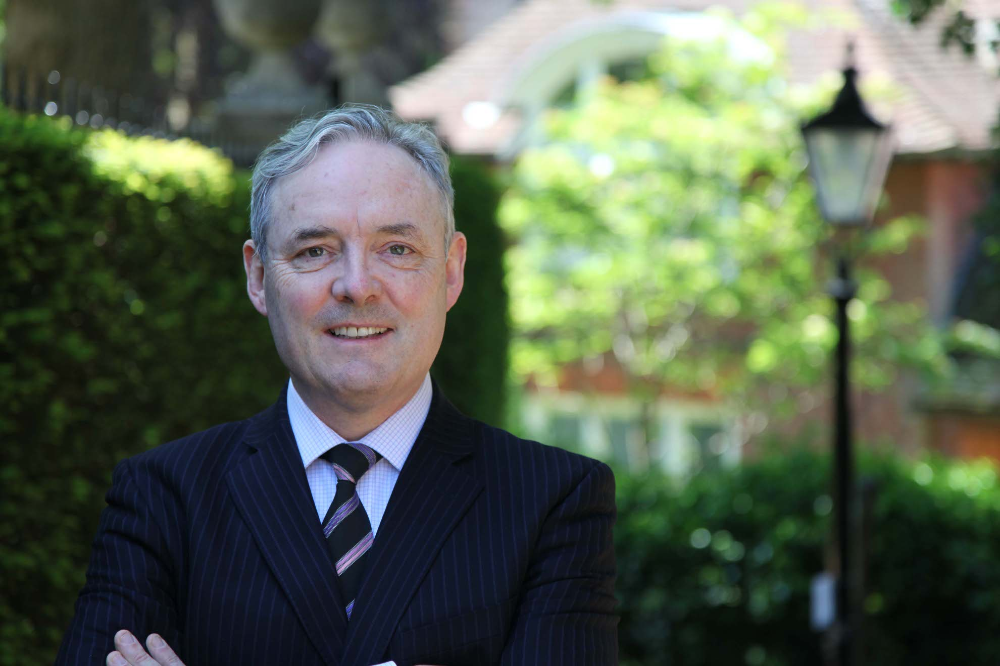

Rory Joyce
Independent Planning Consultant
BA(Hons) MSc CEnv FRICS MRTPI FRGS
Rory Joyce is the Principal of Brunel Planning.
He has given Strategic Planning advice on a wide range of commercial, residential and infrastructure developments to both public and private sector clients for 35 years.
He was the President of the Planning and Development division of the Royal Institution of Chartered Surveyors and on the RICS Planning & Development Council for 10 years.
He was a Specialist Adviser to the House of Commons Environment Select Committee for five years. He has been a member of the Oxford Joint Planning Law Conference Committee since 1996. He was a member of the Expert Panel for the Airports Commission 2014-2015.